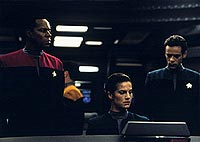
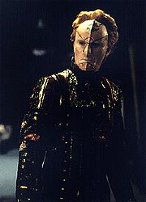
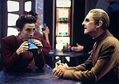
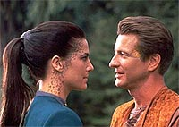
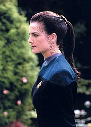

MANCHETE
DO EPISDIO
Romance
totalmente descontextualizado
produz o pior episdio da srie
Episdio
anterior | Prximo
episdio
Sinopse:
Data Estelar: 48423.2.
Odo e Kira esto conversando
sentados a uma mesa do Replimat quando chega Timor, um
inconveniente e rico aliengena que quer passar uma trrida
noite de amor com a major a qualquer custo. Kira diz (para se
livrar de Timor) que ela e Odo so felizes amantes, para
incredulidade de Timor, que parte, e de Odo, que fica atnito com
tal perspectiva aps Kira voltar ao trabalho.
Sisko, Dax, Bashir e O'Brien esto em misso com a Defiant no
quadrante Gama. Eles so surpreendidos por um planeta que
simplesmente "aparece" orbitando uma estrela prxima.
Os habitantes do planeta Meridian (consistindo de uma nica
aldeia com 30 pessoas) contatam a Defiant e Seltin Rakal os
convida para a "primeira refeio". Sisko e os outros
concordam em partilhar da refeio.

Durante
a "refeio" Seltin explica que eles (e o planeta
inteiro) existem por perodos de tempo alternados nesta realidade
e em uma outra no-corprea. Dax e um cientista nativo, de nome
Deral, se mostram interessados pelas pintas um do outro. Deral
acha que a chave para o fenmeno se encontra no corao da
estrela local.
De volta a DS9, Tiron est entediado com os programas da holo-sute
de Quark e pede ao Ferengi por um "programa especial"
envolvendo a major Kira. Ele diz que "dinheiro no
problema".
Em Meridian, Deral explica que eles so descendentes de uma
expedio que se acidentou ali milnios atrs. Infelizmente os
perodos em que eles existem em nossa realidade vm diminuindo
ao longo do tempo (o atual no vai durar mais que 12 dias) e
eventualmente chegar o ponto em que ser to breve que
Meridian simplesmente deixar de existir em qualquer uma das
realidades. Sisko oferece a sua ajuda para estabilizar os
"deslocamentos dimensionais" que Seltin prontamente
aceita.
Kira chamada ao Quark's, onde o Ferengi lhe diz que ela
"ganhou" o prmio de "milionsima cliente do
bar". Um dos brindes obviamente uma hora livre na holo-suite,
o que Kira considera um timo presente de aniversrio para um
certo alferes Quintana. Quark percebe que no vai ser to fcil
quanto ele pensava conseguir a imagem de Kira para o programa de
Tiron.
Os sensores da Defiant revelam que a estrela local emitiu
descargas de radiao gama juntamente com o reaparecimento de
Meridian, algo que os seus habitantes obviamente no poderiam
saber. Sisko envia uma sonda para obter maiores informaes.
Enquanto a telemetria da sonda no chega, Dax e Deral vo
passear. Sobem em uma rvore, andam beira de um lago, comem
algumas amoras e finalmente se beijam.

Alguns
dias mais tarde, os dois esto trabalhando nas flutuaes gama
do sol de Meridian. Com adicional telemetria da sonda, agora mais
profunda na coroa da estrela, eles descobrem que os
"deslocamentos dimensionais" de Meridian esto
relacionados com um desequilbrio na prpria
estrela. Se isto puder corrigido, os "deslocamentos"
podero ser mais bem controlados.
Em DS9, Quark tenta obter uma imagem de Kira, de forma sorrateira
com uma holocmera no Promenade. Ele notado, perseguido e pego
por Kira e Odo. Entretanto, o Ferengi no desiste.
Dax diz a Deral que eles podem igualar os perodos entre os
"deslocamentos dimensionais", mas que tal trabalho de
estabilizao do sol de Meridian s estar pronto quando
Meridian reaparecer de novo em 60 anos. Deral diz que quer partir
com Dax.
Seltin est muito agradecida pelos esforos de Dax e cia. Mais
tarde, com alguma dificuldade, Deral consegue dizer a Seltin e aos
outros Meridians que ele vai partir com Dax.
Tiron, j impaciente, procura Quark, que garante que est quase
tudo pronto. Odo avisa Kira que algum acessou o arquivo pessoal
da major. Os dois obviamente sabem que foi Quark e qual o objetivo
do Ferengi. Kira recruta a ajuda de Odo para preparar uma
"surpresinha" para o Ferengi.
Deral no quer deixar Meridian, seu povo precisa dele. Dax diz
que decidiu ficar em Meridian com ele e que j bolou um plano
para usar o transporte para prepar-la adequadamente para o
"deslocamento dimensional". Dax entrega o seu
"pedido de licena de 60 anos" a Sisko e se despede
do velho amigo.
O programa de Tiron finalmente fica pronto e ele sobe apressado
para "provar" como ficou. Ele vislumbra a silhueta de
Kira comeando pelos ps. Porm quando chega na cabea, ele
encontra a de Quark no lugar da de Nerys. Chocado, ele ameaa
Quark e diz que no vai pagar por nada e parte no mesmo momento
em que chegam Odo e Kira ao Quark's e perguntam inocentemente pelo
ocorrido.

Dax
passou seis horas na sala de transporte se preparando para o
"deslocamento dimensional". Ela se despede de todos e se
transporta finalmente para a superfcie, se rene com os nativos
e aguarda o "deslocamento".
O "deslocamento" se inicia, mas Dax comea a atuar como
uma espcie de "ncora" ,impedindo que ele se
complete. O planeta vai se destroar se o
"deslocamento" no se processar. A Defiant transporta
Dax de volta e o planeta desaparece finalmente e de forma segura.
Sisko visita os aposentos de Dax e diz que sente muito. Dax diz
que no existe nada que ele possa fazer e que ela s precisa de
tempo. Sisko parte. Ela se senta no canto do quarto, inconsolvel.
Comentrios:
Quando Kira se v assediada por um aliengena endinheirado e
safado, tememos pelo pior. Quando Dax se apaixona de verdade (e
sem motivo algum em tela) por sua "cara-metade de
pintas" a ponto de estar disposta a jogar tudo (carreira,
patente, amigos, famlia etc.) para o alto, para viver com ele
uma existncia no-corprea, nem chegando a ponderar como isso
afetaria a sagrada vida do seu simbionte, chega certeza.
Estamos assistindo a um "completo desastre televisivo"
(TM). Mais detalhes, sem precisar passar 60 anos "em uma
outra dimenso" para tanto, nas linhas abaixo.
Das duas histrias do episdio, a secundria foi a menos
ofensiva. O que refora uma tendncia j observada em "The
House of Quark" e "The
Abandoned", em que histrias secundrias de episdios
so mais bem-realizadas que as suas respectivas histrias
principais. Uma histria que pode ser resumida como "Kira
sendo perseguida pelo aliengena tarado da semana"
definitivamente no pode ser boa e de fato no o . Tal histria
refora um aparente desejo dos roteiristas de apresentar a major
como uma "mulher caliente e desejvel" (o que sem dvida
ser assunto da recapitulao desta terceira temporada) e que
vem se mostrando uma deciso equivocada ao longo dos episdios.
Tiron quer uma escrava sexual com a forma de Kira (ele no faz
questo da verdadeira), um atestado da superficialidade completa
de tal histria. A encenao de "Kira e Odo como
amantes" foi falsa ao extremo (o que irnico, visto o
aparente interesse dos produtores em colocar os dois juntos) e
pela primeira vez, desde "The
Collaborator", Odo realmente aparenta ter sentimentos
pelo major. A idia de ter "Kira como a milionsima cliente
de Quark" foi talvez a melhor de toda essa histria, mas no
consegue de forma alguma salv-la.

Quark
tentando tirar uma holofoto de Kira no Promenade, depois sendo
perseguido pela major e ameaado com uma prola do tipo "se
voc tentar de novo eu te fao engolir esta mquina", foi
constrangedor de se assistir e entregou completamente o
plano-mestre de Quark (depois disso, Kira sabe exatamente o que
Quark quer fazer e para quem). Quark ento parte para o plano que
ele deveria ter usado em primeiro lugar (acessar os arquivos da
major), ele descoberto e isso nos leva para o final da tal histria,
envolvendo o encontro de Tiron com a "QuarKira" (ou
qualquer outro nome adequado para uma criatura meio Bajoriana meio
Ferengi). Palavras so insuficientes para descrever o bizarro de
tal cena. Grotesco!
A histria principal do episdio mal comea e j temos trs
problemas. Primeiro: usar a Defiant, como neste episdio, em uma
aventura no formato clssico de Jornada depem contra a
identidade e unicidade da srie. Se isso incomoda quando o
produto final bom, que dir em um desastre como este. Segundo:
se faz sentido que Sisko fosse enviado em uma misso especfica
e importante para a Federao, por outro lado, turismo intergalctico,
como apresentado aqui, completamente absurdo. Terceiro:
sempre lamentvel a utilizao do termo "dimenso"
como referncia a um lugar (que os roteiristas ficassem com algo
estilo "Universo paralelo", "realidade
alternativa" ou similar).
A lgica a respeito do planeta Meridian tambm bastante
falha. Como uma civilizao inteira pode se resumir a uma nica
vila? Como os Meridians podem no envelhecer na forma no-corprea
e ainda assim sentirem a passagem do tempo? Tentando
"explicar" (e no explicando nada, por sinal) um tpico
conceito de fantasia com toneladas de "tecnobaboseira" s
piora a situao, acabando totalmente com a credibilidade do
episdio.
O caso de Jazia com Deral mais um tpico "romance trekker
da semana", cujas caractersticas gerais j foram
discutidas no contexto de "Melora",
da temporada passada. Existe algum tipo de qumica, interesses em
comum ou qualquer explicao em tela para eles se apaixonarem? No.
Havia alguma dvida se esse romance iria durar ou no? No.
Jadzia vai se lembrar disso no resto da srie? No. Alm de
tudo isto, particularmente ridcula a banalidade dos dilogos
e das situaes entre os dois.

Dax
se mostra incrivelmente rasa em suas interaes com Deral, com prolas
do nvel de: "que tal irmos l pra dentro para contar as
pintas um do outro?" O mais chocante a radical mudana de
vida que ela est disposta a fazer por algo que s existe porque
o roteiro assim o exige. Algo que no tem justificativa alguma
para a audincia. Abismal!
Frakes foi bastante infeliz na direo nesta semana, desde uma
direo de atores que parecia enfatizar o riso fcil, at
equivocadas escolhas de ngulos e perspectivas. Coisas bizarras
acontecem, como a rvore em que Deral e Jadzia sobem, que parece
ter diferentes alturas, dependendo do ngulo da cmera (?) e
tomadas distantes (totalmente fora de lugar) acompanhando nossos
"pombinhos" em seu passeio (sem contar com os
verdadeiros "trancos" quando da transio de uma histria
para a outra).
Outra cena absurda j quase no final. Sisko em p tenta se
comunicar com Dax. Da temos um corte e Bashir que diz para
O'Brien trazer Dax a bordo e vemos Sisko sentado passivo na
cadeira de comando (parece que "sobrou" alguma cena na
edio final). A msica de McCarthy (retornando de seu trabalho
como compositor da trilha sonora de "Generations")
to intrusiva e aucarada que chega a dar crie. Temos aqui
alguns dos piores efeitos de materializao e desmaterializao
dos ltimos tempos. A seqncia final particularmente mal
resolvida, deixando, aps o desaparecimento de Meridian, um fundo
de estrelas com fumaa (?). Os cenrios tambm so bem ruins.
Farrell foi claramente um problema esta semana, no apenas no
conseguindo trazer nenhuma profundidade a uma criatura que
supostamente tem oito vidas de experincias com tambm exibindo
um verdadeiro festival de caras e bocas. Alm do qu, o trabalho
dela com "fundo azul" ao final do episdio foi
pavoroso. Os demais regulares, ao menos, no amplificaram (o que
digno de nota em um desastre televisivo de tal magnitude) a
calamidade instaurada de sada por esse inacreditavelmente pssimo
roteiro (alis, que roteiro?).
Combs tenta fazer algo com o material dado, mas tudo em vo.
Tiron escrito de forma repulsiva e suas motivaes so
transparentes e rasas ao extremo (pior impossvel). Por sua vez
Cullen, Healy e Humphrey redefinem o termo: "atuar como sonmbulos".
No ouvimos falar nada sobre os danos e necessrios reparos da
estao --danos produzidos durante os acontecimentos descritos
em "Civil
Defense" da semana passada. Por que a Defiant no
utilizou o dispositivo de camuflagem na sua misso? Ficou tambm
sem explicao ao longo da srie se a Frota Estelar continuou
com o processo de estabilizao do sol de Meridian ou no.
Talvez a melhor cena do episdio tenha sido a despedida entre
Sisko e Dax, mas a situao foi produzida de maneira to
absurda que fica difcil lev-la muito a srio.
"Meridian" o pior segmento de todas s 176
horas de televiso produzidas de DS9. Tal
"feito" atingido com uma "perfeita" combinao
de elementos: total previsibilidade e nenhuma inspirao; mais
um "romance Trekker da semana", na histria principal,
que deixa Jadzia mais rasa que um pires ao seu final; uma total
falta de credibilidade e mesmo de bom senso; uma pssima direo;
abismais valores de produo (msica, cenrios, efeitos
visuais etc.) e a certeza de que foi apenas produzido porque
qualquer coisa precisava ser produzida para no deixar um "vcuo"
na linha de montagem da produo da srie. Um verdadeiro
antiepisdio.
Citaes
Quark - "Sorry to hear
you say that, but, if you're asking for a refund, forget it. The
contract specifically says that satisfaction is not
guaranteed."
("Sinto muito em ouvi-lo dizer isso, mas, se voc est
pedindo um reembolso, esquea. O contrato especificamente diz que
a satisfao no garantida.")
Bashir - "I don't know what to say."
("No sei o que dizer.")
Dax - "That will be a first."
("Esse um evento histrico.")
Dax - "I just need some time... just sixty years or
so."
("S preciso de algum tempo... uns sessenta anos mais ou
menos.")
Dax - "I can't remember the last time I did this: strolled
through a garden, climbed a tree..."
("No me lembro da ltima vez que fiz isso: passear por um
jardim, escalar uma rvore...")
Trivia:
 Este episdio considerado por muitos fs como o pior da srie,
tendo somente "Profit and Lace"
("aquele" em que Quark se transforma em uma fmea
Ferengi para fechar um negcio), da sexta temporada de DS9,
como um adversrio " altura". O episdio tambm
um "favorito" dentro da produo da srie: ningum
gostou do resultado!
Este episdio considerado por muitos fs como o pior da srie,
tendo somente "Profit and Lace"
("aquele" em que Quark se transforma em uma fmea
Ferengi para fechar um negcio), da sexta temporada de DS9,
como um adversrio " altura". O episdio tambm
um "favorito" dentro da produo da srie: ningum
gostou do resultado!
Ira Behr foi quem teve a idia de fazer uma verso Niner de
"Brigadoon". "Brigadoon" um musical, tendo
por conceito uma vila nas montanhas da Esccia que aparece e
desaparece a cada 100 anos. A escritora Hilary Bader ("Battle
Lines", "Rules
of Acquisition", "Meridian" e "Explorers")
trouxe para bordo do episdio um conceito que se tornou a base
para a histria principal de "Meridian". A idia de
Bader para uma histria secundria foi abandonada em favor de
uma mais humorstica de Evan Carlos Somers ("Battle
Lines", "Melora"
e "Meridian"). Mark Gehred-O'Connell ("Second
Sight", "Meridian", "For the
Cause" e "Who Mourns for Morn?")
escreveu o roteiro que foi rescrito at a morte, mesmo durante as
filmagens.
Muitos fs se perguntam por que desastres como "Meridian"
so produzidos? Ronald D. Moore explica que o cronograma de uma
temporada de TV algo impiedoso: "pronto ou no, algo tem
que entrar na linha de montagem de produo". Normalmente o
que acontece nesses casos extremos durante a fase de pr-produo
(tipicamente os sete dias que antecedem o comeo das filmagens do
episdio) um roteiro ser "jogado fora". Da um novo
tem que ser concebido e escrito durante as filmagens e ter sua
histria acertada ao mesmo tempo. Parece loucura, mas foi o que
aconteceu em "Meridian", segundo Moore.
O especialista em efeitos visuais, Glen Neufeld, teve uma terrvel
experincia com "Meridian", pois a forma inicial
pensada para fazer os habitantes de "Meridian"
aparecerem e desaparecerem ficou um desastre na prtica e teve
que ser corrigida e corrigida at a obteno de um resultado
satisfatrio. A equipe de efeitos visuais teve mais sorte com a
"pegadinha de Timor". Nana Visitor deveria aparecer na
cena e utilizar uma mscara especial para a insero posterior
da cabea de Quark na ps-produo. Visitor ainda no estava
recuperada da sua traumtica experincia como Cardassiana em "Second
Skin" e no topou fazer a cena. Da foi chamada a
dubl de corpo de Visitor, Leah Burrough, que aparece na cena,
que necessitou de mais de dez elementos compostos com o auxlio
de "blue-screen" para ficar pronta.
A aldeia de "Meridian" foi filmada no tradicional
"estdio 18", o cenrio foi baseado naquele do
"Templo de Masaka" do episdio "Masks",
da stima temporada de A Nova Gerao (um episdio tambm
extremamente ruim). O cenrio tinha como conceito um prdio com
uma clarabia que trazia luz natural para a cmara principal. Um
cenrio de 270 graus (com rvores pintadas nele) foi colocado
"ao fundo" de tal "prdio" e o diretor de
fotografia Jonathan West trouxe a "luz do sol" para a
cena em grande estilo. Tivemos tambm externas de verdade,
filmadas nos Jardins Huntington em San Marino.
Este episdio traz a estria do ator Jeffrey Combs em Jornada.
Aqui como o aliengena Tiron. Combs havia tentado, muito antes
disto, o papel de "William Riker" na poca da pr-produo
de A Nova Gerao. Papel que acabou ficando, como todos
sabemos, com Jonathan Frakes. Combs manteve contatos com Frakes ao
longo dos anos, o que foi importante para ele pegar o papel em "Meridian"
(dirigido por Frakes). Durante as filmagens, ele reatou uma antiga
amizade com Ren Auberjonois que mais tarde chamou Combs para
viver o Ferengi Brunt, em "Family Business",
dirigido pelo alter-ego de Odo. Brunt se tornou um personagem
recorrente ao longo da srie. Combs ainda conseguiu um segundo
papel recorrente, como o principal Vorta da srie, Weyoun
(introduzido em "To the Death", da quarta
temporada).
Ficha
tcnica:
Histria de Hilary Bader e Evan
Carlos Somers
Roteiro de Mark Gehred-O'Connell
Direo de Jonathan Frakes
Exibido em 14/11/1994
Produo: 054
Elenco:
Avery Brooks como
Benjamin Lafayette Sisko
Ren Auberjonois como Odo
Nana Visitor como Kira Nerys
Colm Meaney como Miles Edward O'Brien
Siddig El Fadil como Julian Subatoi Bashir
Armin Shimerman como Quark
Terry Farrell como Jadzia Dax
Cirroc Lofton como Jake Sisko
Elenco convidado:
Brett Cullen
como Deral
Christine Healy como Seltin
Jeffrey Combs como Tiron
Mark Humphrey como Lito